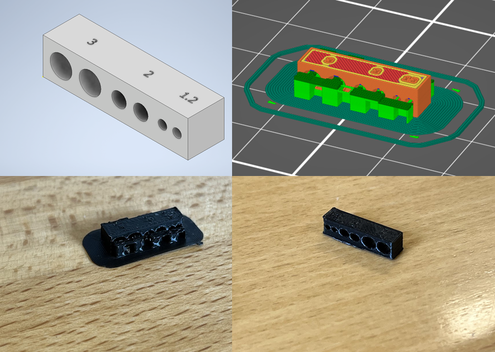

Verkefnið snerist um að hanna lítið módel fyrir 3D prentun sem ekki væri hægt að framkvæma með frádráttar framleiðslu og prenta hlutinn. Ég hef alla ævi haft brennandi áhuga á geimflaugum og tækni tengdum þeim. Seinustu mánuði hef ég ásamt félaga mínum verið að gæla við þá hugmynd að smíða lítið geimflauga módel. Því taldi ég tilvalið að nýta þetta verkefni í að hanna og prenta prótótýpu af TVC (thrust vector control) kerfi.
TVC
Thrust vector control er hæfni eldflaugar eða annars farartækis til að stýra stefnu knýkrafts (e. thrust) frá hreyfli sínum til að stjórna stöðu eða hornhraða farartækisins. Sjá má dæmi um TVC í SRB eldflaugahreyfli frá NASA hér að neðan.
Margar hannanir eru á netinu fyrir svona mekaník á minni skala og fékk ég mikinn innblástur frá eftirfarandi tveimur myndböndum frá BPS.space youtube rásinni: myndband 1, myndband 2.
Hönnun
Í raun er hönnunin þrír mismunandi partar og væri mjög erfitt eða ómögulegt að framleiða þá með frádráttarframleiðslu. Hlutirnir þrír sem sjá má hér að neðan eru hringur til að stýra x-stefnunni, hringur til að stýra y-stefnunni og túba til að setja eldflaugarmótórinn inn í. Partarnir voru allir teiknaðir í Autodesk Inventor en hér að neðan voru þeir opnaðir í Fusion svo hægt sé að skoða þá í þrívídd á þessari vefsíðu.
Sem dæmi um erfiðleika frádráttarframleiðslu má sjá að á fyrsta partinum sem er hringurinn sem stýrir y-stefnu eru hlutir sem fara bæði upp og niður úr hringnum, svo er stærri hringurinn nánast holur að innan til að minnka þyngd hans og væri ómögulegt að ná því fram með frádráttaraðferðum.
Hér að neðan má svo sjá samsetta TVC mekanismann og myndband af hvernig ætlað er að hann hreyfist.
Prentun
Áður en hafist var handa við 3d prentun þurfti að framkvæma prófanir á prentaranum svo prentun á hlutnum í heild sinni myndi heppnast sem best. Þar sem nokkrar mismunandi stærðir af holum eru í hlutnum var teiknaður lítill partur með öllum mismunandi gerðum af holum til að ákvarða í hversu miklum halla væri þörf fyrir support (sjá hér að neðan). Support eru tímabundnar uppbyggingar sem hjálpa til við að prenta parta sem hafa yfirhangandi hluta (overhang). Í Prusa Slicer er hægt að stilla overhang threshold og var komist að því að við 30 gráður komu öll götin vel út.

Eftir að hafa lokið við þessi test þurfti að athuga hvort 30 gráðurnar myndu einnig virka fyrir alla hina þætti (e. features) partanna. Til þess voru teiknaður tveir litlir partar með helstu þáttum TVC módelsins og þeir prentaðir með overhang threshold sem 30 gráður.
Það kom ótrúlegt en satt vel út með 30 gráður og því ekkert eftir nema að skella öllum hlutnum í prentun með sömu stillingar.
Pörtunum var komið fyrir í Prusa Slicernum með sömu stillingum og áður. Prentunin tók rúman fimm og hálfan tíma og komu allir þættir vel út að mestu.
Aðal ósættið með prentunina voru litlir hnökrar á yfirborði túbunnar en hefur það engin áhrif á mekanismann sjálfan svo er það allt í lagi. Partarnir voru svo að lokum festir saman líkt og sjá má hér að neðan.
Til gamans voru svo festir tveir litlir servo mótorar á samsetninguna og voru plássin fyrir þá í minni kantinum en komust þeir samt fyrir að lokum. Hér að neðan má sjá virkni hlutarins og lærði ég mikilvægi prótótýpu því helst vil ég hafa dálítla meiri hreyfigefu og get ég fá unnið að endurbættri hönnum út frá því. Einnig lærði ég mikilvægi þess keyra prófanir á 3D prentaranum til þess að lokaafurð komi sem best út.
HLUTI II - 3D skönnun
Verkefnið snerist um að 3D skanna einhvern hlut.
Hugmyndavinna
Við undirbúning verkefnis sá ég að nemendur fyrri ára höfðu notað appið Polycam. Það var auðvelt í notkun og nýtir allt að 150 myndir til að búa til 3D módel. Eftir að hafa tekið myndir og búið til módel komst ég að því að til þess að fá módelið sem stl file þyrfti að borga fyrir pro útgáfu af appinu. Hægt var að fá 7 daga free trial en ég treysti mér engan vegin til þess að muna eftir að afskrá áskrift mína áður ég þyrfti að borga. Því lét ég duga að nota ókeypis útgáfu appsins og gat þá einungis fengið myndskeið af hlutnum.
Fyrst reyndi ég að 3D skanna einn af mínum uppáhalds hlutum, bjór. En þar sem bjór flaskan var glær og endurspeglaði ljós varð skönnunin á hálsinum mjög skrítin. Næst ákvað ég að fara í allt aðra átt og vildi skanna einn af mínum minnst uppáhalds hlutum, Ronju (köttur kærustunnar minnar) en ótrúlegt en satt vildi hann ekki vera kjurr og náði appið því ekki að skanna hausinn hennar.
Að lokum ákvað ég að skanna eitthvað sem væri líklegra til að koma vel út og ákvað ég þá að skanna kertastjaka sem sjá má hér að neðan.
 Aðal ósættið með prentunina voru litlir hnökrar á yfirborði túbunnar en hefur það engin áhrif á mekanismann sjálfan svo er það allt í lagi. Partarnir voru svo að lokum festir saman líkt og sjá má hér að neðan.
Til gamans voru svo festir tveir litlir servo mótorar á samsetninguna og voru plássin fyrir þá í minni kantinum en komust þeir samt fyrir að lokum. Hér að neðan má sjá virkni hlutarins og lærði ég mikilvægi prótótýpu því helst vil ég hafa dálítla meiri hreyfigefu og get ég fá unnið að endurbættri hönnum út frá því. Einnig lærði ég mikilvægi þess keyra prófanir á 3D prentaranum til þess að lokaafurð komi sem best út.
Aðal ósættið með prentunina voru litlir hnökrar á yfirborði túbunnar en hefur það engin áhrif á mekanismann sjálfan svo er það allt í lagi. Partarnir voru svo að lokum festir saman líkt og sjá má hér að neðan.
Til gamans voru svo festir tveir litlir servo mótorar á samsetninguna og voru plássin fyrir þá í minni kantinum en komust þeir samt fyrir að lokum. Hér að neðan má sjá virkni hlutarins og lærði ég mikilvægi prótótýpu því helst vil ég hafa dálítla meiri hreyfigefu og get ég fá unnið að endurbættri hönnum út frá því. Einnig lærði ég mikilvægi þess keyra prófanir á 3D prentaranum til þess að lokaafurð komi sem best út.